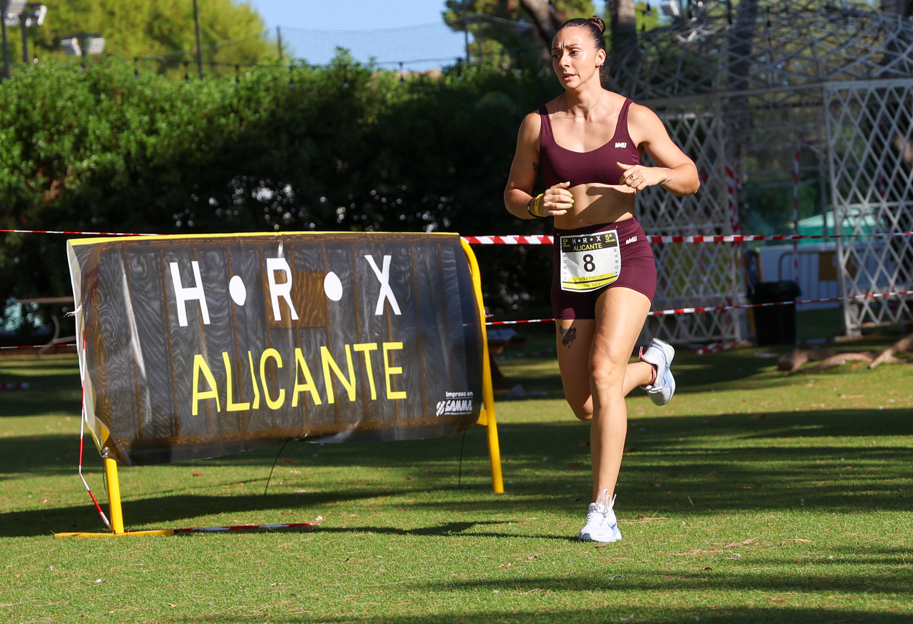
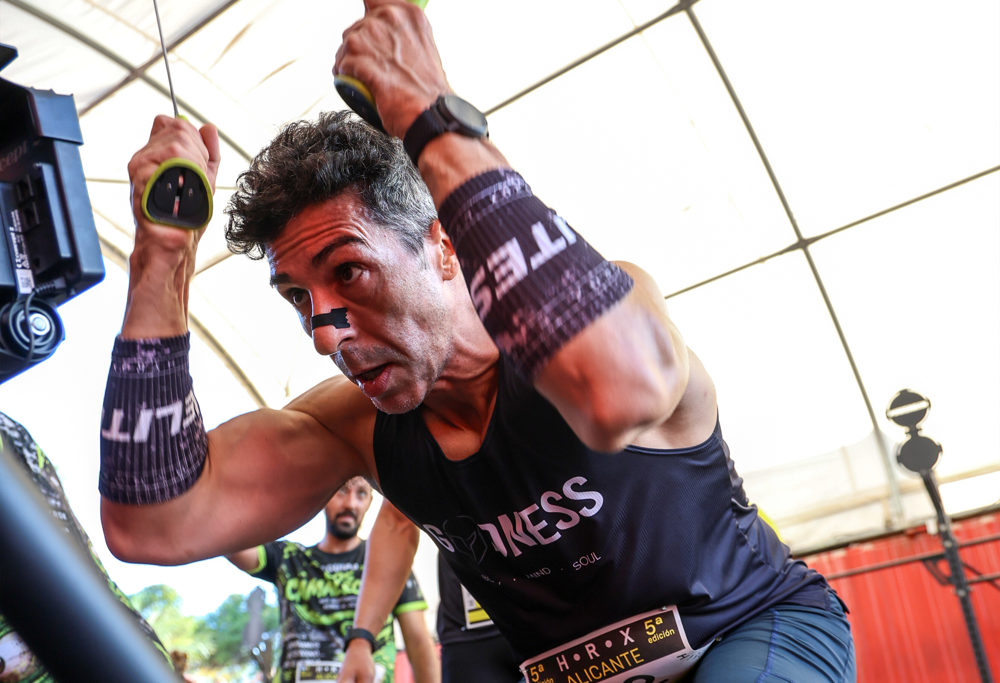

Alicante hosted HRX Alicante Hyrox Test Septiembre on 19 September 2026, bringing a day of hybrid fitness to Spain’s Costa Blanca. Image Media covered the event with photographers Luan Chepernate, Luis Moreira and Leandro Rocha.
The event’s timing-service listing offered individual, pairs and team formats, each with eight one-kilometre running segments. The selected photographs capture different parts of the challenge, moving between the outdoor lanes and close-up views of athletes at work.

Strength and movement
In Leandro Rocha’s lead photograph, athletes lean into loaded sleds across parallel lanes. Luan Chepernate’s running image shifts the scene to grass beside the HRX Alicante signage, while his close-up at the ski ergometer brings the athlete’s concentration into focus.

Image Media coverage
Reporting: IM News Editorial Desk
Photography: Luan Chepernate, Luis Moreira and Leandro Rocha / Image Media
Event date and formats checked against the Chiplevante and WodBuster Arena event records.